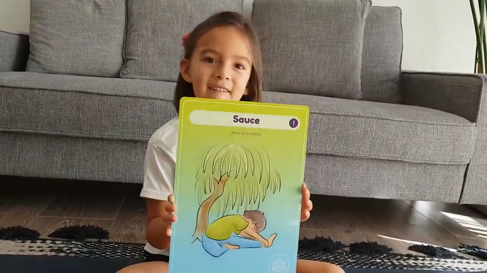

Aquí les comparto una postura de Yoga que habíamos preparado con Luz (cuando aún teniamos sol 🌞😆)
Esta es la postura del Sauce (Janu Sirsasana), una linda postura que ofrece muchos beneficios, entre los cuales destacamos:
☆ Calma el cerebro.
☆ Estira la columna vertebral, hombros, isquiotibiales y las ingles.
☆ Estimula el hígado y los riñones.
☆ Mejora la digestión.
☆ Ayuda a aliviar los síntomas de la menopausia.
☆ Alivia la ansiedad, fatiga, dolor de cabeza, malestar menstrual.
Esperamos que la disfruten junto a sus niños y niñas en casa y nos ayuden con un LIKE 👍 para que más familias puedan ver este video.
Que tengan un lindo y tranquilo fin de semana.
Luz y Carmen 💫